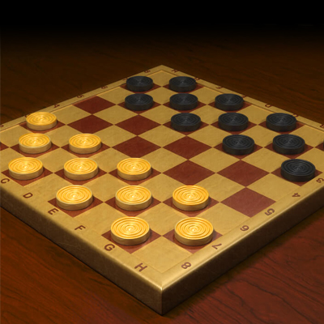

The classic game of Checkers!
Objective:
To eliminate ALL enemy pieces from the board!

How to play:
General Setup
- Each player starts with 12 pieces
- Players take turns "hot seat" style.
- Once a player makes a single move, that player's turn is over.
Each Turn
- The player whose turn it is may move one piece forward diagonally one space
(if that space is unoccupied).
- Pieces may only move forward, unless they are "Kings" (to be discussed later).
- If a player's piece has an opposing player's piece as a diagonal neighbor, AND the space beyond
the opposing player's piece is open, that player may "jump" the opposing player's piece, removing
it from the game.
- If after a jump is made, another jump is immediately possible, the second jump must be made, as do
all subsequent jumps.
Kings
- If a player's piece traverses the entire board and reaches the row nearest their opponent
(referred to as the "King Row") the piece becomes a King.
- Unlike Men (pieces that are not Kings), Kings can move both forward AND backward, although they can still
only move one space, and they must move diagonally.
- Special Case: If a jump causes a Man to land on the King Row, and another jump is immediately possible,
the second jump is not executed. The Man becomes a King, remains on the King Row, and the turn is over.
The End
Once either player has no more pieces remaining on the board, OR is unable to make any sort of move,
that player loses the game.
Click here for more in-depth rules and regulations!
Click here to play the game!